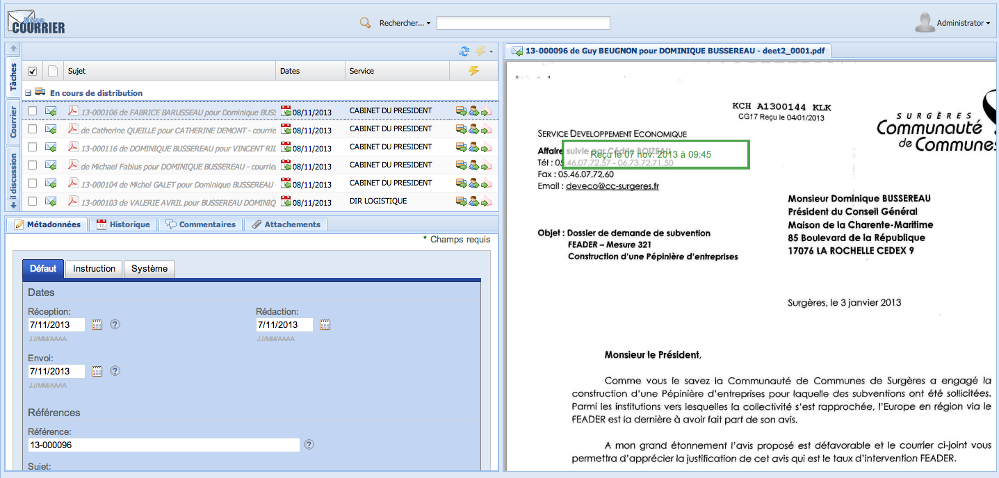
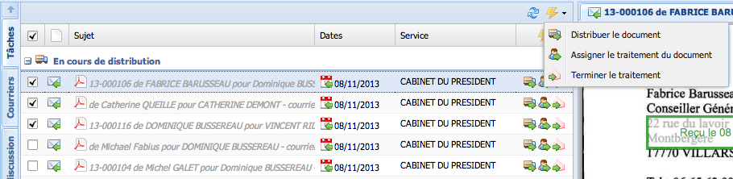
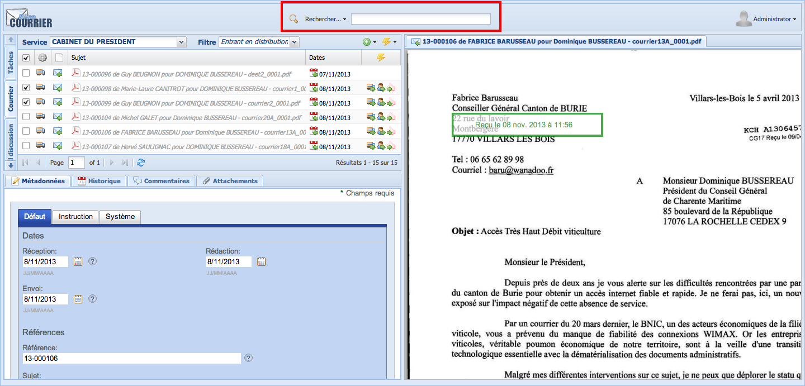
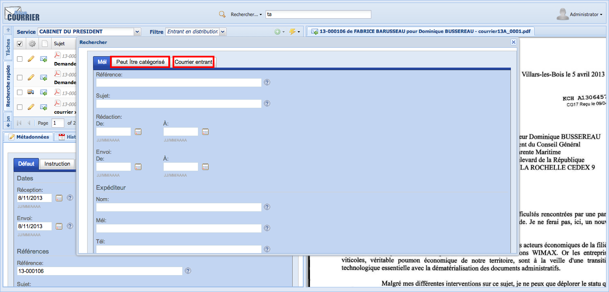
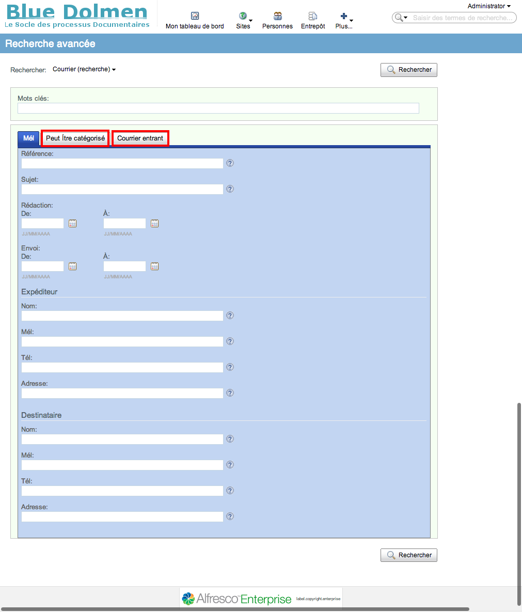
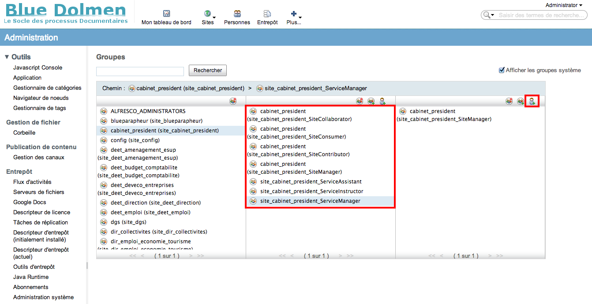
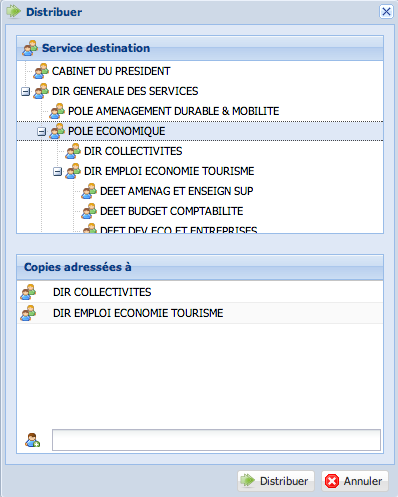
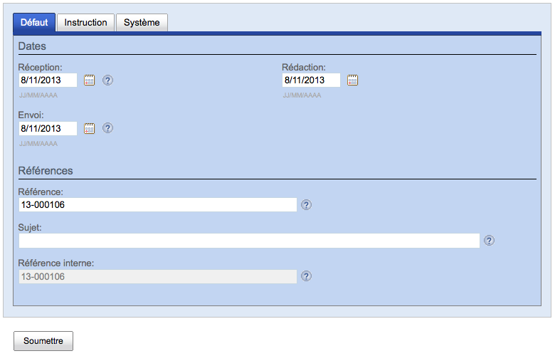
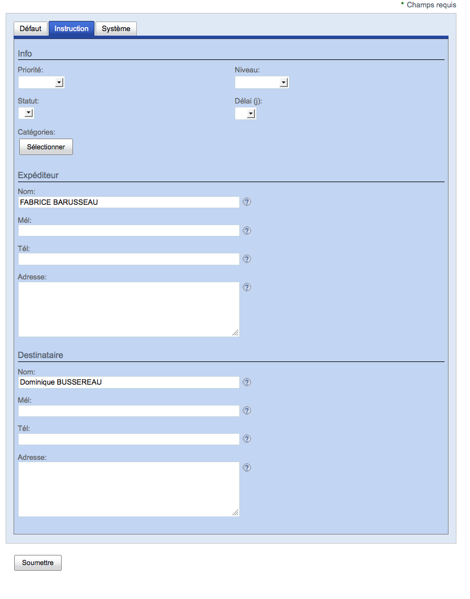
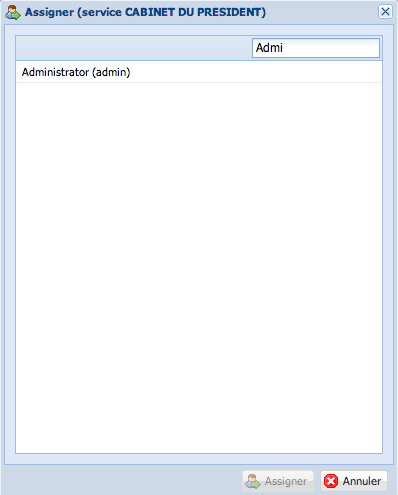

Lorsque l'utilisateur est connecté, il accède à une interface qui se décompose en 3 parties :
\
La première partie liste les courriers :
L'utilisateur n'a dans cette vue que les courriers qui le concernent. Ils sont groupés par état du courrier :
Un courrier concerne un utilisateur à partir du moment où il peut y accéder et qu'il a les droits Blue Courrier adéquats.
Sur chaque courrier, les actions que peut faire l'utilisateur sont accessibles sous forme d'icône. En double-cliquant sur un courrier, l'utilisateur est positionné sur la vue 'Conversation'.
Si plusieurs documents sont sélectionnés, les actions suivantes peuvent être réalisées sur l'ensemble des documents en une fois :

L'utilisateur a dans cette vue tous les courriers auxquels il a accès. Elle permet donc aux utilisateur ayant des droits sur toute l'organisation de voir tous les courriers.
Une vue plus restreinte est possible en sélectionnant un service et/ou un processus.
Par défaut, l'utilisateur est positionné sur la vue correspondant à son service.
Le traitement par lot est possible comme précédemment.
Cette vue permet de visualiser un échange de courriers et resitue le courrier concerné dans cet échange.
Les actions que peut faire l'utilisateur sont disponibles sous forme d'icône comme dans la vue par tâches.
Le traitement par lot n'est pas accessible dans cette vue.
Cette vue permet de prévisualiser les courriers et les pièces jointes. La prévisualisation repose sur le moteur de GED Alfresco avec les mêmes limites en terme de qualité, notamment lorsqu'il s'agit de prévisualiser des documents au format Office (.odc, .xls, .ppt).
Les courriers sont des documents stockés dans la GED et soumis aux mêmes règles au niveau des conditions d'accès. Les recherches sont effectuées sur l'ensemble des courriers auquel l'utilisateur a accès, c'est à dire sur lequel l'utilisateur a au moins les droits de lecture.
L'utilisateur peut rechercher un courrier :
soit à partir de l'interface Blue Courrier, qui facilite par la suite sa circulation en vue de son traitement ;
soit à partir de la GED, qui facilite la consolidation des données en restituant aussi bien les courriers que les autres documents répondant aux critères de recherche.
La recherche peut s'effectuer :
à partir d'un champ de recherche global ; les champs recherchés sont :
\ \
à partir de formulaires spécifiques pour la recherche avancée ; les types disponibles, avec leurs champs correspondants, sont :
Les catégories sont également disponibles pour la recherche.
Le résultat de la recherche retourne une liste de courriers, répondants aux critères indiqués, qui s'affiche dans la partie centrale. Le fait de double-cliquer sur un courrier le positionne alors dans la discussion où il est apparu.
La fonctionnalité de recherche est également disponible dans la GED.

En outre, les courriers entrants et sortants pouvant être catégorisés, il est possible de naviguer sur les courriers via les catégories à partir de l'entrepôt ou des sites.
Le bordereau de validation correspond à l'historique du courrier 'départ'. Disponible en en html pour une consultation en ligne, il est possible de l'imprimer directement à partir du courrier pour une validation manuelle.
C'est une action de masse. L'assistant(e) peut ainsi sélectionner plusieurs courriers et imprimer en une seule action tous les courriers précédés de leur bordereau de validation. Des pages blanches sont automatiquement injectées dans le pdf obtenu afin que l'impression se fasse correctement.
L'utilisateur avec ce rôle peut gérer (ajouter, renommer, supprimer) les priorités, délais et niveaux de confidentialité.
Les listes de données sont stockées dans un site appelé Blue Configuration. L'administrateur fonctionnel va dans les listes de données de ce site et édite les listes correspondantes. Il peut alors ajouter ou modifier des valeurs. Il est préférable de ne pas supprimer de valeurs afin d'éviter que les courriers y faisant référence ne se retrouvent dans un état instable.
L'utilisateur avec ce rôle peut ajouter la fonctionnalité de gestion de courrier à un site Alfresco Share, que ce soit un site organisationnel ou un site projet. Il indique le site parent lors de cette configuration.
L'administrateur fonctionnel se connecte au site d'administration de Blue Courrier à l'adresse suivante :
Ce site permet d'initialiser Blue Courrier ainsi que :
créer un nouveau site
créer l'organigramme de la structure en positionnant les sites les uns par rapport aux autres.
Cette fonctionnalité repose sur Alfresco Share. Elle permet à l'utilisateur avec ce rôle de gérer les utilisateurs et de les mettre dans les groupes correspondants aux rôles qu'ils ont.
L'administrateur fonctionnel être déclaré en tant qu'administrateur Alfresco afin de bénéficier de cette fonctionnalité. Il peut ainsi accéder à la gestion des groupes de chaque site et plus particulièrement ajouter des utilisateurs aux groupes caractéristiques de Blue Courrier pour le site souhaité. Ces groupes sont nommés à partir de du' nom du site, complété par ServiceAssistant, ServiceInstructor ou ServiceManager. Par exemple, pour le site Direction, les groupes de Blue Courrier sont :

Le décideur a un tableau de bord à sa disposition affichant les statistiques suivantes sur les courriers :
BlueCourrier repose sur Alfresco et bénéficie par conséquent de la totalité des protocoles supportés par Alfresco. L'utilisateur peut dématérialiser le courrier :
via un scanner. Les enveloppes sont ouvertes, les courriers extraits et empilés, séparés à l'aide d'intercalaires indiquant les services de destination. Le résultat est déposé en 1 ou 2 étapes (permettant ainsi un traitement intermédiaire) dans un répertoire directement connecté sur Alfresco via un lecteur réseau CIFS. Les courriers sont automatiquement nommés par le système et n'ont pas besoin d'être modifiés. En effet, d'autres méta-données permettent de retrouver le courrier. Les éléments ainsi déposés sont déplacés dans la bannette du site 'cabinet DG' pour validation et ventilation ;
via l'outil de messagerie Outlook capable de gérer des comptes secondaires IMAPS connectés sur le serveur Alfresco. L'import d'un mél avec des pièces jointes intègre le mél et les pièces jointes en tant que telles dans Blue Courrier ;
via un import unitaire direct dans l'interface Blue Courrier. Cette fonctionnalité permet d'importer un document présent sur le poste de l'utilisateur ou déjà présent dans la GED. Certaines organisations préfèrent ne garder que la fonctionnalité d'import à partir de la GED afin de limiter l'utilisation des ressources locales (en l'occurrence son ordinateur) par l'utilisateur ;
via un import en masse dans l'interface Alfresco Share. Les documents peuvent venir de la GED, où ils sont déjà stockés, ou du système de fichiers local.
Elle est effectuée par les utilisateurs ayant un rôle d'assistant. Distribuer un courrier consiste à sélectionner le service de destination et les éventuels services en copie.

L'organigramme des services apparaît. L'utilisateur peut choisir :
Cette action peut être réalisée en masse afin d'accélérer les traitements. Il suffit de sélectionner plusieurs courriers puis de cliquer sur l'action en masse correspondante.
La distribution devant-être validée par le cabinet 'DG' avant ventilation réelle dans l’interface dédiée à cet effet, les courriers intéressant la DG sont déplacés dans le cabinet 'DG'.
Pour les courriers n'intéressant pas la DG (factures, missions...), l'assistant(e) a une action permettant de distribuer les courriers directement sans passer par la validation du cabinet 'DG'.
L'utilisateur, membre du cabinet 'DG' visualise pour chaque courrier le service de destination qui a été choisi en amont lors de la préparation de la distribution :
Si la pré-distribution convient, l'utilisateur peut confirmer la distribution. Cette action est disponible en masse ;
Si la pré-distribution ne convient pas sur un ou plusieurs courriers, il peut modifier la distribution en cliquant sur l'icône correspondante. La même fenêtre que pour la préparation de la distribution s'affiche alors et l'utilisateur peut la modifier comme il le souhaite. En cliquant sur distribuer, l'utilisateur valide alors celle-ci.
A la fin de cette action, les courriers sont déplacés dans les bannettes des services destinataires.
Les informations à renseigner sont les suivantes :
date de réception : date à laquelle le courrier a été déposé à l'ANFR ;
date de rédaction: date à laquelle le courrier a été rédigé ;
date d'envoi : date à laquelle le courrier a été envoyé (cachet de la poste) ;
numéro : numéro de recommandé (national, international...)
référence de l'organisation ;
objet ;
référence Blue Courrier (non modifiable)
délai : délai de traitement du courrier. Ce délai s'ajoutera à la date de réception pour calculer une date d'échéance
priorité
visibilité
En double-cliquant dans la vue Conversation, l'utilisateur est ainsi directement positionné sur le courrier, celui étant situé dans une conversation éventuelle.
expéditeur :
personne physique ou organisation/pôle/direction/service
instructeur
signataire
Une liste permet de sélectionner le nom et l'adresse de l'expéditeur. 3 cas peuvent se présenter :
s'il n'est pas dans cette liste, l'utilisateur peut en créer un directement dans l'interface de GED Alfresco Share depuis Blue Courrier ;
s'il est dans la liste, les informations sont automatiquement copiées dans les champs prévus à cet effet. Une référence peut être conservée mais simplement à titre informatif car il est important de conserver les données présentes au moment de l'enregistrement du courrier et de ne pas les mettre à jour ;
s'il s'agit d'un contact unique, alors il suffit de saisir les informations nécessaires
S'il s'agit d'une personne physique, l'instructeur et le signataire auront les mêmes informations que pour la personne physique. L'information est redondante mais elle est destinée à faciliter le travail des utilisateurs qui n'auront pas ainsi à choisir le champ où saisir le critère. En effet, selon qu'il s'agisse d'une personne physique ou d'une organisation, le signataire sera toujours saisi au même endroit.
destinataire :
service : service de l'instructeur ;
instructeur : personne suivant le courrier
signataire : responsable de l'instructeur
L'instructeur peut aussi être le signataire lorsqu'un responsable traite lui-même un courrier.
Le service est sélectionné dans une liste déroulante. La liste des instructeurs est directement mise à jour en fonction des utilisateurs enregistrés dans le groupe 'ServiceInstructor' du site. La liste des signataires est constituée de l'ensemble des utilisateurs enregistrés dans 'ServiceManager' du service (et donc du site) et des utilisateurs enregistrés dans 'ServiceManager' du cabinet 'DG'.
Les écrans suivants présentent la mise en page des champs à partir du découpage présenté précédemment :
Ecran principal (défaut)
Instruction
Système


Cet écran contient des informations techniques qui peuvent être utiles en cas de problèmes afin d'aider au diagnostic.
Un historique retrace l'ensemble des actions survenant sur les courriers entrants et sortants.
Cette liste l'ensemble des actions, la date, l'heure et les personnes les ayant réalisées.
L'utilisateur peut apporter des commentaires au courrier entrant ou au courrier sortant. Ces commentaires sont également accessibles via la GED.
L'utilisateur peut joindre des documents au courrier entrant ou au courrier sortant. Ces pièces jointes peuvent être de toute nature.
Lorsque l'utilisateur importe un mél dans Blue Courrier, le corps principal du message constitue le courrier entrant alors que les pièces jointes sont automatiquement ajoutées au courrier entrant avec leur propre format.
A chaque étape de la distribution d'un courrier après sa validation par le cabinet 'DG', un instructeur peut être assigné au traitement du courrier.
Le courrier peut être réassigné par l'assistant ou le responsable du site afin de gérer les absences.
L'assignation est une action disponible sur les courriers dans les vues Tâches et Conversation. Dans la vue Tâches, les courriers peuvent être assignés en masse.

En cliquant sur l'icône d'assignation, les instrcuteurs disponibles dans le service apparaissent. Une recherche sur leur nom peut être effectuée afin de diminuer leur nombre.
Le courrier étant assigné, l'utilisateur désigné peut en commencer l'instruction.
L'instructeur indique qu'il a démarré le traitement du courrier en cliquant sur l'action 'Démarrer l'instruction'. Cette action est importante pour le calcul des délais et vérifier notamment le délai de prise en compte.
La première chose à faire est de déplacer le courrier de la bannette 'Courrier entrant' du service dans le répertoire métier, stocké dans le même site. L'instructeur déplace tout le répertoire et pas seulement le fichier. En effet, quand un fichier est importé dans Blue Courrier, un répertoire est automatiquement créé afin de pouvoir y stocker éventuellement des pièces jointes.
L'instructeur peut remplir/compléter la fiche d'indexation. Le même formulaire est présenté à tous les acteurs accédant au courrier, quelle que soit l'étape où ils sont.
Cette fonctionnalité repose sur le poste de l'utilisateur et/ou sur les fonctions de GED disponibles à travers Alfresco Share.
Le courrier sortant peut être stocké n'importe où dans Alfresco Share. Il est généralement stocké dans le plan de classement métier à côté du courrier entrant.
Une fois le courrier créé, il est attaché au courrier en entrée via un mécanisme comparable à celui de l'import d'un courrier entrant. L'attachement peut se faire par copie ou par déplacement. Dans ce dernier cas, le courrier est déplacé par Blue Courrier dans un sous-répertoire du répertoire du courrier entrant.
Par exemple, pendant la création de la réponse, on a l'arborescence suivante, le répertoire correspondant au courrier entrant ayant été déplacé dans le répertoire 'Réclamations usager/2013/10':
Une fois la réponse ajoutée au courrier arrivé via le logiciel Blue Courrier, on a l'arborescence suivante (les 3 premiers répertoires ont été fusionnés afin de pouvoir se concentrer sur les autres) :
Blue Courrier ajoute un répertoire 'replies' destiné à stocker les réponses éventuellement multiples apportées au courrier 'arrivé'.
Garder le document au niveau du plan de classement métier en même temps que dans le répertoire 'replies' créerait de la redondance et risquerait de rendre l'arborescence confuse. Nous préconisons par conséquent de déplacer la réponse et de ne pas faire de lien.
Les informations disponibles pour le courrier sortant sont les mêmes que pour un courrier arrivé aux différences suivantes :
date de rédaction : elle est initialisée avec la date de l'ajout de la réponse ;
date d'envoi : elle sera mise à jour lorsque l'action 'Marquer comme envoyé' sera joué ;
référence : la référence de la réponse est la référence du courrier 'arrivé' suivi de '/R1' pour la première réponse, '/R2' pour la deuxième réponse à ce même courrier arrivé...
objet ; l'objet de la réponse est l'objet du courrier 'arrivé' précédé de 'Re :';
catégories : les catégories de la réponse sont initialisées avec les catégories du courrier 'arrivé'. En revanche, la catégorie 'courrier entrant' a été remplacée par la catégorie 'courrier sortant';
expéditeur : l'expéditeur est initialisé avec les valeurs du destinataire du courrier entrant :
service ;
instructeur ;
signataire : contient le dernier signataire : soit le responsable du service, soit un responsable du cabinet 'DG'.
destinataire : le destinataire est initialisé avec les valeurs de l'expéditeur du courrier entrant ;
priorité
visibilité
Une réponse peut être supprimée par l'instructeur en cas d'erreur. Il suffit de cliquer sur l'icône correspondante sur la réponse.
L'instructeur peut mettre un courrier en validation une fois qu'il estime l'avoir terminé. Cette action est importante pour le calcul des délais et vérifier notamment le délai de validation.
L'utilisateur visualise les courriers qu'il a à valider dans la vue Tâches à faire par l'utilisateur.
Blue Courrier propose 2 traitements possibles :
Si le contenu ne convient pas, l'utilisateur peut :
le modifier directement dans la GED puis l'associer explicitement via Blue Courrier ; la nouvelle réponse remplacera alors l'ancienne en la versionnant.
le refuser, ce qui signifie que le rédacteur précédent (qui peut ne pas être l'auteur original du document) devra corriger le document ;
Lorsque le contenu convient (après éventuelles modifications), l'utilisateur peut (choix exclusifs) :
le valider et le transmettre pour validation à un autre responsable ;
le mettre au parapheur pour signature.
Cette étape est informatisée mais peut être traitée manuellement. Ainsi, il est possible d'imprimer un courrier avec son bordereau de validation. Cette action peut être faite en masse. Un parapheur peut ainsi être constitué et soumis au responsable. Celui-ci peut traiter le document, le refuser et l'annoter ou le signer.
Une fois le parapheur récupéré, l'assistant(e) reproduit dans Blue Courrier les actions faites par le responsable, au nom de celui-ci afin que l'historique soit pertinent. Le signataire indiqué sera bien sûr le responsable.
Pour conclure, en cas de validation, le document signé est numérisé et vient remplacer la version précédente en la versionnant.
Les courriers à corriger sont visualisés pour un site donné en cliquant sur le filtre 'A corriger'.
L'utilisateur consulte alors d'abord les commentaires, puis l'historique et enfin le document pour voir les corrections éventuellement apportées par des acteurs ayant participé au circuit de validation. Il utilise alors la GED pour le modifier.
Les courriers à envoyer sont visualisés pour un site donné en cliquant sur le filtre 'Envoi postal'. L'utilisateur peut :
S'il s'agit d'un service autre que le service courrier, le courrier est alors déplacé dans la bannette 'Envoi postal' du service courrier sortant. En parallèle, le courrier est fourni physiquement au service courrier sortant.
S'il s'agit du service courrier sortant, le courrier est alors stocké dans le site archive. En parallèle, le courrier est physiquement donné à la poste.
Cette action permet de marquer un courrier comme traité lorsqu'aucune réponse n'est requise.
Du point de vue de la GED, les courriers sont des documents comme les autres. Les DUAs peuvent donc s'appliquer et les courriers seront archivés de la même maninière.
Cette action étant une action de GED, Blue Courrier ne propose pas de fonction d'archivage.